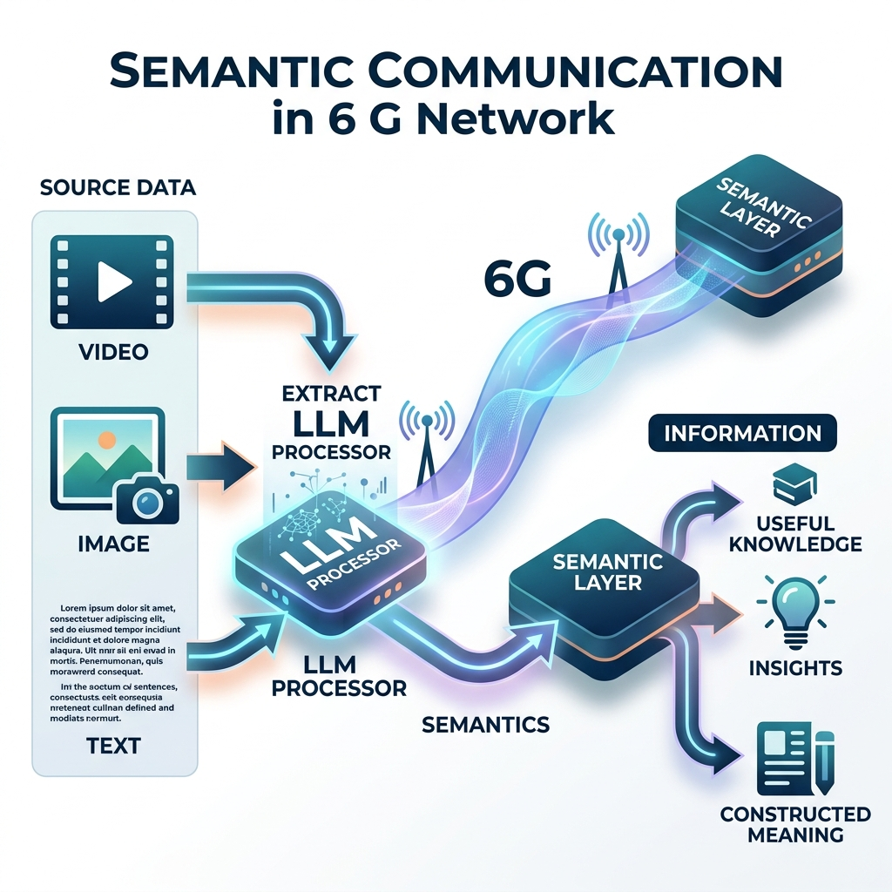
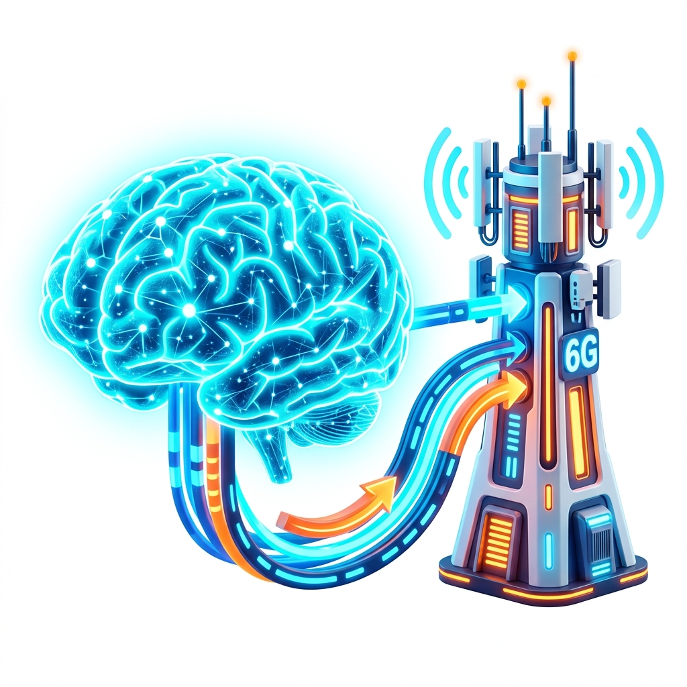
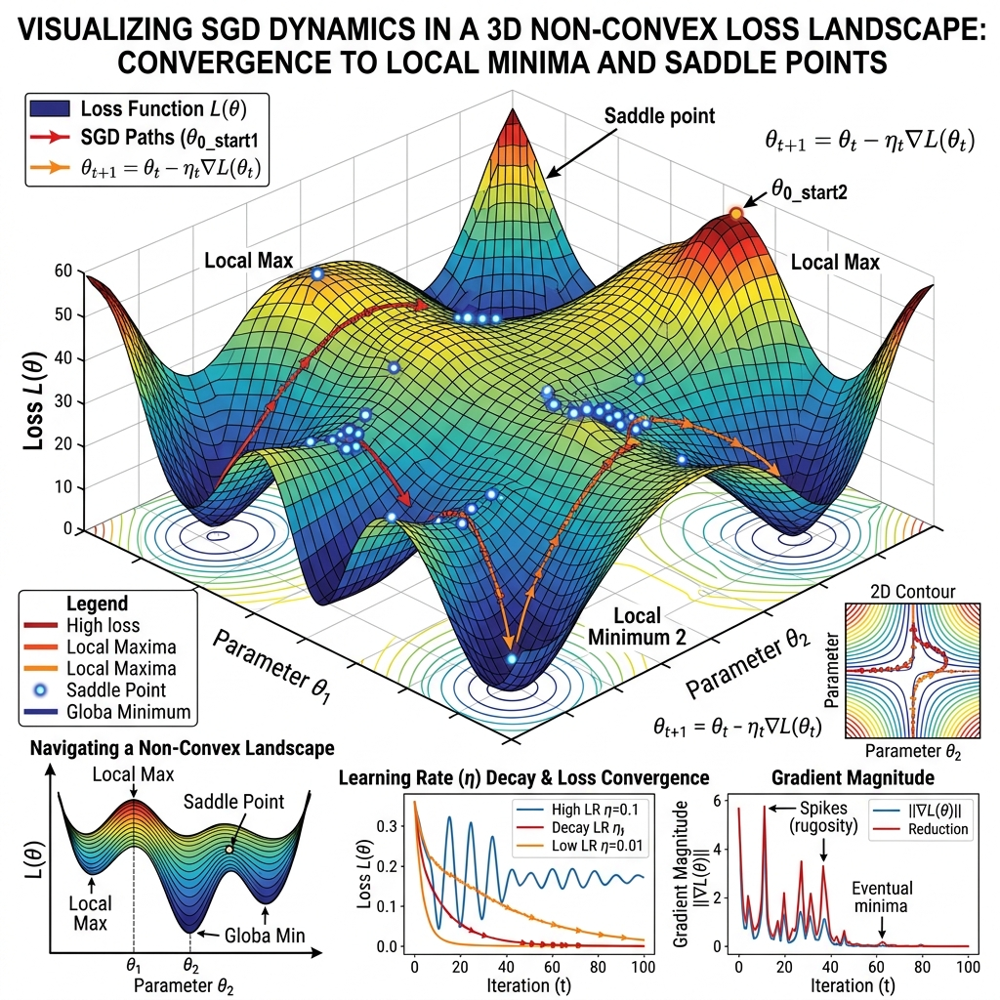

AI systems that can reason, adapt, and remain reliable in the real world.
Our work blends theory, systems, and interdisciplinary insights, from explainable AI, neuroscience-inspired modeling, game theory, and Bayesian inference to real-world network deployment challenges.

Semantic Communication
Communication systems that convey meaning and task-relevant information rather than only raw bits.

Foundation Models for Networks
AI-native network intelligence using large-scale models for reasoning, adaptation, and control.

Mathematical Foundations of AI
Principled tools for trustworthy, generalizable, and interpretable AI systems.
Integrated Sensing & Communication
Joint sensing, communication, computation, and control for next-generation wireless systems.
Latest Updates from TRAIN Lab
Recent announcements, publications, and media features.

Recent lab activity
NEWSDR 2025
Poster on emergent semantic communication and O-RAN integration challenges.
Postdoc Symposium
Spotlight talk at the University of Virginia, Charlottesville, VA.
AIRI Talk
Invited talk on next-generation AI for emergent semantic communications.
CSL Visit
Visiting the Coordinated Science Laboratory, University of Illinois Urbana-Champaign.